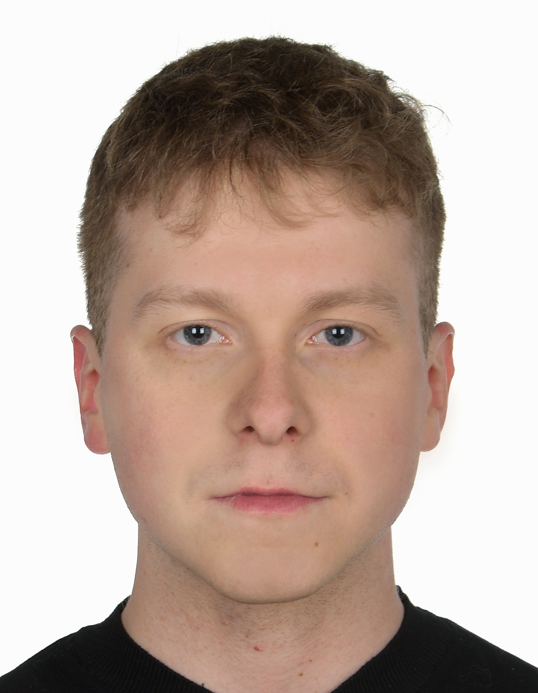

Projektowanie w AutoCAD: rozmieszczenie czujek, sensorów, tras kablowych
Udział w projektowaniu instalacji niskoprądowych: SSP, DSO, CCTV, BMS, LAN, AV
Dobór aparatury pomiarowej, okablowania i elementów wykonawczych
Praca z DTR i schematami automatyki budynkowej
Przygotowywanie dokumentacji projektowej oraz powykonawczej
Pełnienie roli lidera działu modułów
Testowanie, uruchamianie i montowanie systemów mechatronicznych
Wykonywanie prac serwisowych, naprawy, wymiana komponentów i konserwacja
Pomoc przy montażu automatycznych bram i szlabanów
Testowanie poprawności działania i bezpieczeństwa systemów
Kalibracja czujników oraz systemów awaryjnych
Magister Automatyki i Robotyki | Sterowanie i monitoring maszyn
Inżynier Technologii Przemysłu 4.0
Technik mechatronik